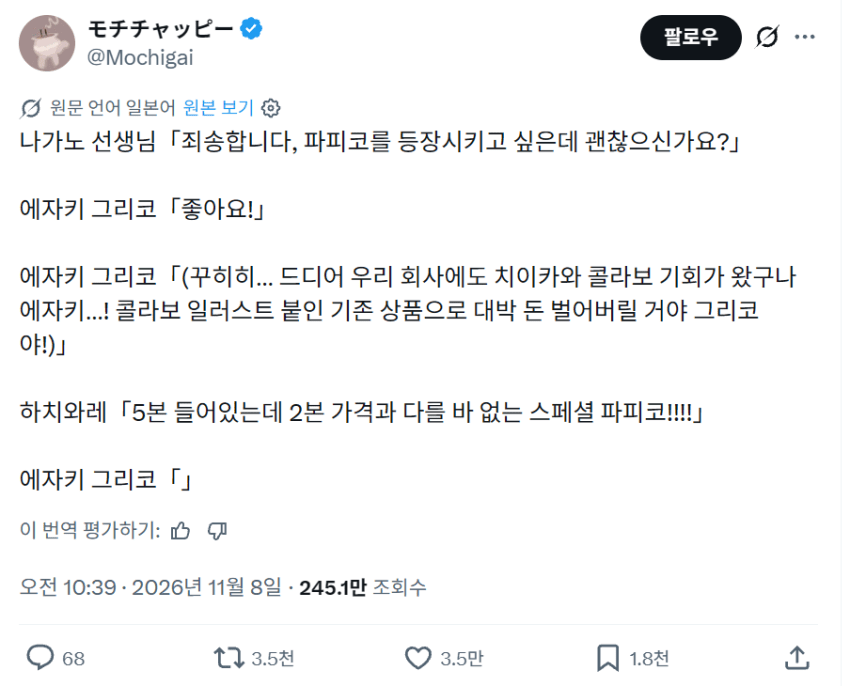
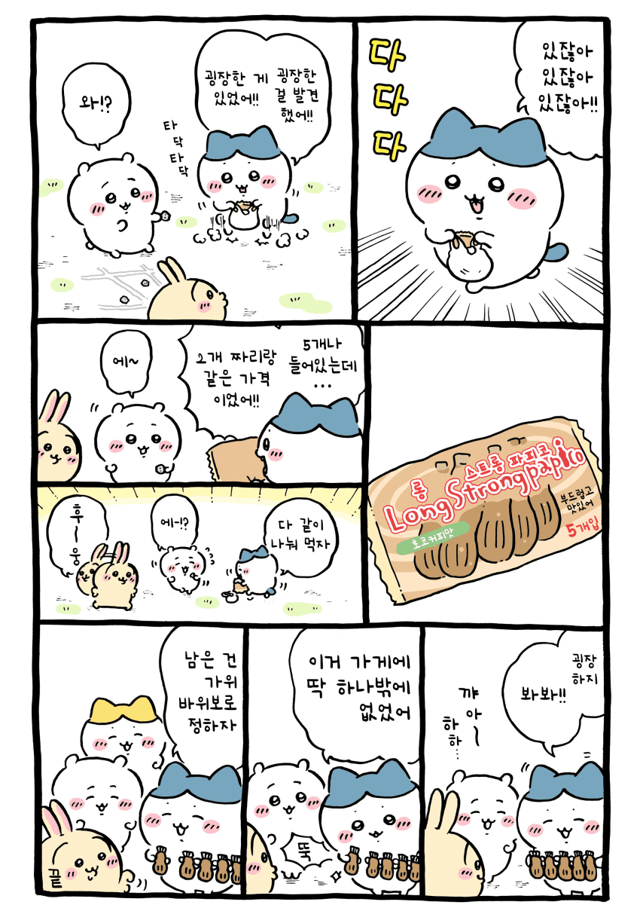

ㅋㅋㅋㅋㅋㅋㅋㅋㅋㅋ


ㅋㅋㅋㅋㅋㅋㅋㅋㅋㅋ
이달의 우수사원

에-
하치와레가 회의 들어가기도 전에 단가부터 후려쳐 버림
용량을 기존 2개분의 80%로 하고 5개짜리 용기에 나눠담으면 마진은 맞출듯
5개짜리 용기 금형비용 + 새로운 공정 이라 할수있을란가모르겠네 먼작귀에서 나중에 사건끝나고 일반빠삐코로 회식하는거 아니면 꽤힘들듯 ㅋㅋㅋㅋ
단가부터 후려친 거 실화냐
부랄이 5개!
그런다고 뭘할수있지? 콜라보 하고싶어하는 기업이 줄을섰다고
빠삐코랑 콜라보한거임?
비슷함
일본 빠삐코는 쌍쌍바 마냥 두개가 붙어 있더라고
파피코라고 일본 아이스크림 있음

저거 없는거야?
제조사 주제에 뭘 할 수 있지?
아니 맨마지막 노란머리는 갑자기 왜생김???
개무서워 차이카와의 영혼인가..
하치와레랑 성격 다른애들 등장중 인사이드아웃 느낌
원래 특이한 설정 많은 만화인데
저거는 저 초코바?를 하나 뗄 때 마다 본인 감정이 형상화되어서 나타나는걸로 추정
4명나왔는데 표정으로보아 희로애락 같다더라
아 빨리 5개 짜리 만들라고 ㅋㅋㅋㅋㅋㅋ
빠삐코가 우리나라에 있는 빠삐코 그거야?
https://namu.wiki/w/%ED%8C%8C%ED%94%BC%EC%BD%94
이거
본사는 해당작품과 관련이 없음을 알립니다
2본가격을 5본가격으로 올리면 되잖아?